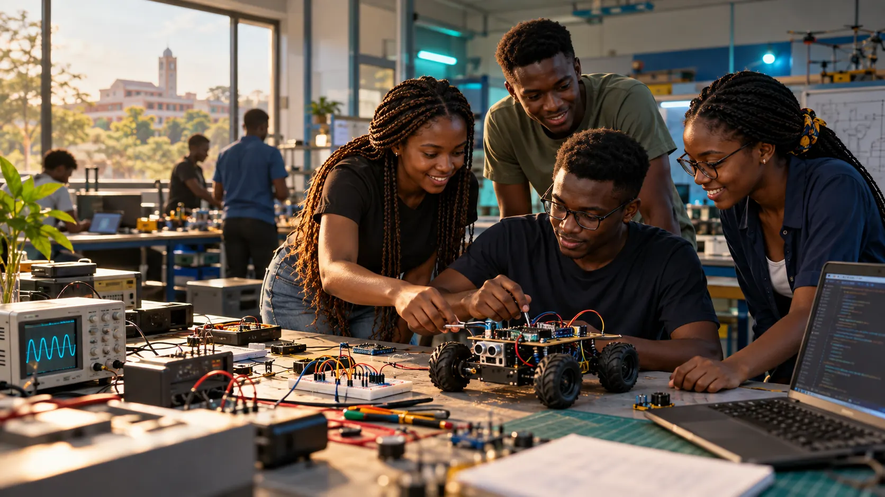

Turn ideas into useful solutions.
We want members to gain the confidence, skills and collaborators to solve problems in the world around them.
SPACE brings curious builders, learners and mentors together to develop practical skills, test ideas and turn promising prototypes into work they can share.

Illustrative artworkMembers can share knowledge, work through technical challenges and build things they can demonstrate. The club connects hands-on learning with project planning, conversations, documents and events.
We want members to gain the confidence, skills and collaborators to solve problems in the world around them.
We connect members with practical workshops, team projects, constructive feedback and opportunities to present their work.
Each track is intended to centre on a build, a test and what members learned. Members can explore more than one track.
Wire sensors and actuators, design control logic and test systems that respond to the real world.
Write code, build interfaces and connect data to useful tools for people and projects.
Assemble circuits, integrate microcontrollers and build moving or connected machines.
Explore data, evaluate models and put a useful idea into a working demonstration.
Meet members across disciplines, bring an idea or join a conversation.
Learn a practical skill, plan with a team and document what you discover.
Share progress, get feedback and prepare strong projects for demonstrations and competitions.
Founders coordinate the direction with members. Approved teachers can guide practical learning and share materials; administrators manage applications and keep club records.
The club plans to inform the Dean of Students’ Affairs and seek acknowledgement of its existence. Its founders and members direct its work.
See the current workshops, projects and conversations in the club workspace. An administrator reviews new accounts before member features open.